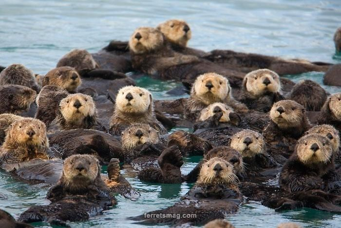
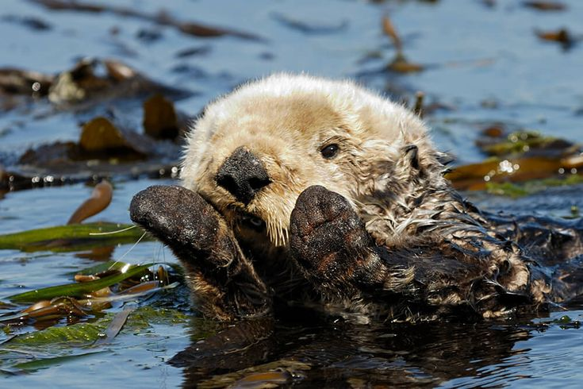
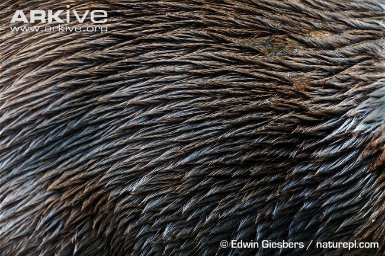
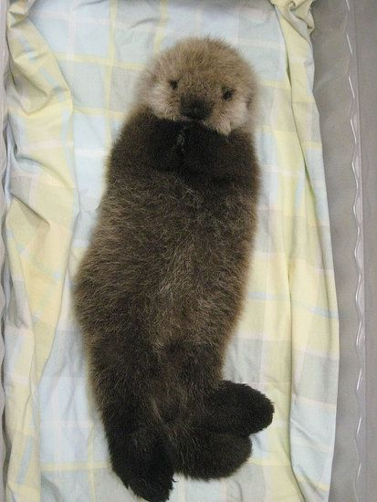

Strona ciekawostek o Wydrach
Specjalnie dla Pana Profesora wyszukałyśy najfajniesze (naszym zdaniem ;) ) ciekawostki o wydrach.
Wydry mają ulubione kamienie – noszą je w fałdce skóry pod pachą i potrafią korzystać z nich przez całe życie.

Zbierają „kamienne kolekcje” – bawią się nimi, podrzucają, obracają w łapkach.
Ślizgają się na brzuchu – po śniegu lub błocie, dla zabawy.

Tworzą tzw. wydrowe tratwy – nawet kilkadziesiąt wydr dryfuje razem, trzymając się blisko.
Mamy owijają młode w wodorosty – żeby nie odpłynęły, gdy dorosła wydra musi zanurkować

Wydry dbają o higienę – myją się dokładnie po każdym posiłku.
Komunikują się ze sobą – używają ponad 20 różnych dźwięków, w tym pisków i gwizdów.
Mają morskie „pchły” – mikroskopijne skorupiaki, które wydry regularnie usuwają.
Już młode wydry świetnie pływają – uczą się tego bardzo wcześnie, często… wrzucone do wody przez mamę.
Trzymają się za łapki podczas snu – żeby nie odpłynąć od siebie podczas dryfowania.
Używają narzędzi – np. kamieni do rozbijania muszli – to rzadkość w świecie zwierząt.
Ich futro jest ekstremalnie gęste – do miliona włosów na centymetr kwadratowy, chroni przed zimnem.
Są bardzo zabawowe – ślizgają się, rzucają kamieniami, budują „zjeżdżalnie”.
Mają specjalne kieszonki na kamienie – pod przednimi łapami, jakby własną torbę.
Młode wydry są tak puszyste, że nie toną – dzięki temu mogą bezpiecznie unosić się na powierzchni.
Potrafią długo nurkować – wstrzymują oddech nawet do 8 minut, niektóre jeszcze dłużej.